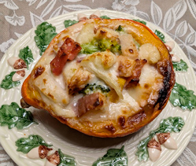

コリンキーとフルーツのグラタン
- 調理時間： 40分
- （一人当たり）
- カロリー：363kcal
- たんぱく質：10.5g
- 脂質：25.9g
- 炭水化物：23.4g
- 塩分：2.7g


＜2人分＞
- コリンキー
- 1個
- カリフラワー
- 30g
- ブロッコリー
- 30g
- ベーコン
- 1枚
- 梨
- 50g
- 柿
- 50g
- バター
- 15g
- 塩、コショウ
- 各少々
- ・薄力粉
- 大さじ1
- ・植物油
- 大さじ1
- ・牛乳
- 100～150ml
- ・塩
- ひとつまみ
- ・コショウ
- 少々
- ピザ用チーズ
- 20g
ホワイトソース


- コリンキーはよく洗い、縦半分に切り、種とワタをとる。
- カリフラワー、ブロッコリーは小房に分け、食べやすい大きさに切る。
梨、柿は皮をむき、一口サイズに切る。
ベーコンは1㎝幅に切る。 - フライパンに油（分量外）を少々しき、②を加えて中火で炒める。
しんなりしてきたら、バターを加えて炒め、塩、コショウで下味をつける。 - 別のフライパンに植物油、薄力粉をいれて弱火で熱し、木べらでひとまとまりになるまで炒める。
牛乳を少量ずつ加えて、混ぜながらとろみがつくまで弱火で加熱する。
塩、コショウで味をととのえる。
※牛乳の量は固さをみて加減する。 - ④のホワイトソースに、③を加えて全体をあわせる。
- コリンキーの器に⑤を盛り付け、ピザ用チーズを散らして、オーブンで焦げ目がつくまで焼いて完成。
コリンキーとフルーツのグラタン
コリンキーという野菜をご存知ですか？
コリンキーはカボチャの一種で、皮ごと生食できるカボチャです。サラダやバーニャカウダ、浅漬けにすると、コリコリした食感で美味しくいただけます。また、火を加えることで甘みが増し、食感も変わりますので色々なレパートリーが広がりますね。寒暖差疲労で体調を崩しがちな時期は、柿や梨などのタンパク質分解酵素を利用して、消化を促す食べ方を意識するとよいでしょう。